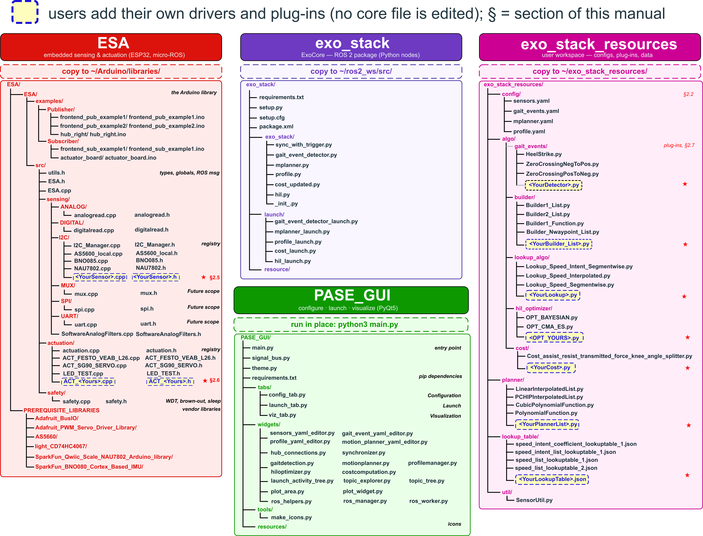
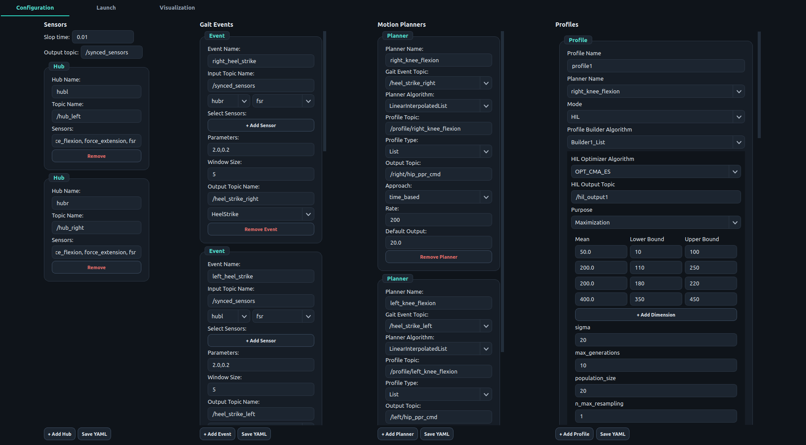

Installation
One git clone fetches the four parts of ExoStack; each is then installed where it runs. Allow about 30 minutes.
ExoStack has four parts. Each is installed in a different place; the column header of the figure gives the destination, and the highlighted boxes mark where you add your own drivers and algorithms.

| Part | Runs on | Language | Installed to | Role |
|---|---|---|---|---|
| ESA | ESP32 boards on the body | C++ (Arduino) | ~/Arduino/libraries/ESA | reads sensors and drives actuators; publishes/subscribes through micro-ROS |
ExoCore (exo_stack) | host PC / Jetson | Python, ROS 2 | ~/ros2_ws/src/ExoStack/exo_stack (cloned) | synchronizes hubs, detects gait events, builds and plays assistance profiles, computes cost, runs HIL |
| exo_stack_resources | host | YAML, JSON, Python | ~/exo_stack_resources | everything you edit: configuration, plug-ins, lookup tables; read by ExoCore at start-up |
| PASE | host | Python, PyQt5 | anywhere (run in place) | edits the configuration, starts/stops every stage, plots any topic |
exo_stack_resources directly in your home directory. It must be ~/exo_stack_resources, not a sub-folder and not inside the ROS workspace.Four installations, in this order: the ESA firmware environment (Arduino), the micro-ROS agent (host), ExoCore (host) and PASE (host). Allow about 30 minutes.
Requirements
| Item | Version | Notes |
|---|---|---|
| Host OS | Ubuntu 22.04 | on a PC or NVIDIA Jetson |
| ROS 2 | Humble (desktop) | ros-humble-desktop provides message_filters and sensor_msgs |
| Python | 3.10 | system Python of Ubuntu 22.04 |
| Arduino IDE | 2.x | |
| ESP32 board package | 2.0.17 (tested) | Espressif esp32 core; must match the micro-ROS build below |
| micro_ros_arduino | 2.0.7-humble (tested) | pre-built micro-ROS client for Arduino |
| Microcontroller | ESP32 (ESP-WROOM-32 tested) | two I²C buses, ADC, DAC |
Get the code
One git clone fetches all four parts; each is then installed from its own folder. Cloning into the ROS 2
workspace lets colcon find ExoCore in place; the folders without a ROS package carry a COLCON_IGNORE file.
$ mkdir -p ~/ros2_ws/src && cd ~/ros2_ws/src
$ git clone https://github.com/debadrata/ExoStack.git
$ cd ExoStack # paths below are relative to this folderA. ESA firmware environment
- Install the Arduino IDE. In Boards Manager, install esp32 by Espressif Systems at the version listed above.
- Download the Humble release of micro_ros_arduino (GitHub:
micro-ROS/micro_ros_arduino) as a ZIP and add it with Sketch → Include Library → Add .ZIP Library. - Copy every folder inside
ESA/PREREQUISITE_LIBRARIES_COPY_TO_ARDUINO_LIBRARIES/into~/Arduino/libraries/. - Copy the library folder
ESA/ESA/into~/Arduino/libraries/so that you obtain~/Arduino/libraries/ESA/src/ESA.h. - Restart the IDE. Open File → Examples → ESA → Publisher → hub_right, select your ESP32 board and press Verify. A clean compile confirms the installation.
| Library (copied in step 3) | Version | Used by |
|---|---|---|
| AS5600 | 0.6.7 | magnetic joint encoder driver |
| Adafruit_BusIO | 1.17.4 | dependency of the PWM driver |
| Adafruit_PWM_Servo_Driver_Library | 3.0.3 | PCA9685 servo driver |
| SparkFun_BNO080_Cortex_Based_IMU | 1.1.12 | BNO085 IMU driver |
| SparkFun_Qwiic_Scale_NAU7802_Arduino_Library | 1.0.6 | NAU7802 load-cell amplifier driver |
| light_CD74HC4067 | 1.0.1 | analog multiplexer (reserved for future use) |
~/Arduino/libraries. Remove any older sensor-suite library from earlier releases; two libraries defining the same classes cause duplicate-symbol errors.B. micro-ROS agent (host)
The agent bridges the ESP32 boards to the ROS 2 graph. PASE starts it for you, but it must be built once.
$ source /opt/ros/humble/setup.bash $ mkdir -p ~/microros_ws/src && cd ~/microros_ws $ git clone -b humble https://github.com/micro-ROS/micro_ros_setup.git src/micro_ros_setup $ sudo apt update && rosdep update && rosdep install --from-paths src --ignore-src -y $ colcon build && source install/local_setup.bash $ ros2 run micro_ros_setup create_agent_ws.sh $ ros2 run micro_ros_setup build_agent.sh
C. ExoCore
$ cd ~/ros2_ws/src/ExoStack $ pip3 install -r exo_stack/requirements.txt # numpy, scipy, pyyaml, cmaes, bayesian-optimization==1.4.3 $ cp -r exo_stack_resources ~/ # must end up as ~/exo_stack_resources $ cd ~/ros2_ws && colcon build --packages-select exo_stack
OPT_BAYESIAN uses the acquisition-function interface of bayesian-optimization 1.4. Version 2.0 removed it.D. PASE GUI
$ cd ~/ros2_ws/src/ExoStack/PASE_GUI $ pip3 install -r requirements.txt # PyQt5, pyqtgraph, ruamel.yaml, ... $ python3 main.py # run PASE from this folder
E. Shell environment
Every terminal that runs ExoCore or PASE needs all three environments. Append to ~/.bashrc once:
source /opt/ros/humble/setup.bash source ~/microros_ws/install/local_setup.bash source ~/ros2_ws/install/setup.bash
F. Verify
| Check | Command | Expected |
|---|---|---|
| ExoCore executables | ros2 pkg executables exo_stack | includes sync, gait_event_detector, mplanner, actuation_profile, cost, hil |
| Launch files | ros2 launch exo_stack + Tab | five *_launch.py files |
| Resources in place | ls ~/exo_stack_resources/config | gait_events.yaml mplanner.yaml profile.yaml sensors.yaml |
| Agent | ros2 run micro_ros_agent micro_ros_agent --help | usage text |
| PASE | cd PASE_GUI && python3 main.py | window with Configuration, Launch, Visualization tabs |
